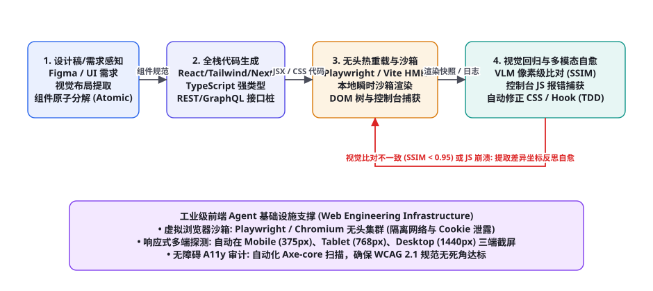
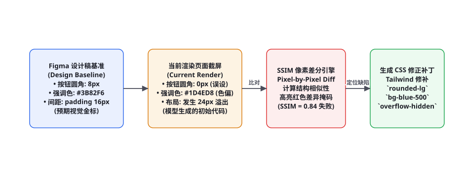

项目 7：全栈 Web 前端开发与 GUI 测试 Agent
全栈前端工程是一个融合了视觉审美、复杂响应式布局（CSS）、异步状态机（React Hooks）与跨端事件交互的庞大体系。传统的代码生成助手通常只能吐出一坨未经校验的 HTML/CSS 代码，丢给开发者后往往一跑就白屏、按钮错位、移动端排版崩溃。本章我们将完整手搓一个生产级「全栈 Web 前端开发与 GUI 测试 Agent」：从 Figma 设计稿或草图多模态解析、React/Tailwind 规范组件生成、Vite/Playwright 无头沙箱瞬时热重载渲染、浏览器控制台报错与白屏捕获，一直到基于结构相似性（SSIM）的像素级视觉回归测试与多模态自愈闭环。
全景架构：编码、渲染与视觉回归的自愈闭环

工业级 Web 前端 Agent 的核心壁垒在于「所见即所得的视觉感知反馈闭环（Visual Feedback Loop）」。它不仅要能写代码，更要拥有一双「能够审查自身运行结果的眼睛」。整个工程流水线由四大关键阶段严密啮合而成：
第一阶段：设计稿多模态感知与组件原子化拆解（Atomic UI Decomposition）。接收用户上传的 Figma 截图、手绘白板线框图或设计规范 JSON。系统利用视觉语言模型（VLM）自动提取调色板（Brand Colors）、排版字体、间距标尺与网格布局，并遵循原子设计理论（Atomic Design）将其递归拆解为图标/按钮（Atoms）、输入表单组（Molecules）与导航仪表盘（Organisms）。
第二阶段：工程化全栈组件代码生成（Full-Stack Code Generation）。严格遵循现代前端生产工程规范，生成基于 TypeScript、React 18 与 Tailwind CSS 的强类型组件代码。系统自动为网络请求预装合规的 Mock 接口桩（MSW, Mock Service Worker），确保组件在脱机沙箱环境下即可拥有真实的动态数据交互体验。
第三阶段：无头浏览器瞬时渲染与运行态侦测（Headless Rendering & Telemetry）。生成的代码在隔离的 Node.js/Vite 沙箱内热重载（HMR）编译运行。底层调度 Playwright / Chromium 无头集群访问本地页面，实时捕获三大核心运行态遥测指标：① 页面 DOM 树与布局尺寸；② 浏览器控制台日志（Console Errors / Warnings）；③ 网络请求失败状态码（404/500 Failed Requests）。
第四阶段：多模态视觉回归比对与自愈循环（Visual Regression & Self-Healing）。Playwright 自动截取页面在桌面端（1440px）、平板端（768px）与移动端（375px）的全屏高保真快照。利用图像结构相似性算法（SSIM）与设计图进行逐像素差分（Pixel-by-Pixel Diff）。若发现色值偏离、文字折行截断或控制台报错，系统自动生成包含红框标注的差分热力图，送回大模型进行精准 CSS 样式与逻辑修补（图 87-1 红色自愈环）。
视觉回归评测：SSIM 差分与热力图定位

很多传统自动化测试仅仅断言 expect(page.getByText('登录')).toBeVisible()。这种断言在前端视觉工程中是极其脆弱的：文本虽然存在于 DOM 树中，但可能被上层的绝对定位元素完全遮挡，或者字号变成了 2px 无法肉眼辨认，甚至背景色与文字色完全相同（白底白字）。
系统引入了基于结构相似性度量（Structural Similarity Index, SSIM）的像素级视觉回归测试。设原始设计稿参考图为 $x$，浏览器真实渲染快照为 $y$，SSIM 综合考量亮度（Luminance）、对比度（Contrast）与结构（Structure）三大特征：
$$\text{SSIM}(x, y) = \frac{(2\mu_x\mu_y + C_1)(2\sigma_{xy} + C_2)}{(\mu_x^2 + \mu_y^2 + C_1)(\sigma_x^2 + \sigma_y^2 + C_2)}$$
其中 $\mu_x, \mu_y$ 为局部像素均值，$\sigma_x, \sigma_y$ 为标准差，$\sigma_{xy}$ 为协方差。当 $\text{SSIM} \ge 0.96$ 时判定视觉对齐通过；若 $\text{SSIM} < 0.96$，差分引擎自动生成一张红色高亮差异热力图（Red-masked Diff Image），让视觉模型（VLM）一眼看出「究竟是哪里的 Padding 设小了」或者「哪个按钮的阴影掉了」。
DOM 树只记录了 HTML 标签的层级关系，它并不理解经过浏览器的排版计算引擎（Layout / Reflow）与合成着色（Paint / Composite）后最终落于物理屏幕上的真实物理像素表现。z-index: -1 可以让一个元素完全隐形却依然存在于 DOM 树中；transform: scale(0) 或 CSS 动画闪烁同样无法在静态 DOM 中被捕获。唯有将真实浏览器渲染出来的栅格化位图（Bitmaps）送入视觉回归流水线，才是衡量 Web 前端用户体验的唯一终极真理。
完整端到端工程实现代码
以下给出该全栈前端开发与视觉测试 Agent 的核心执行引擎实现（Python + Playwright 环境），涵盖 React 代码生成、无头浏览器动态加载、控制台异常拦截与 SSIM 视觉差分测试：
import os, re, json, time
from typing import Dict, Any, Tuple
from playwright.sync_api import sync_playwright
class WebFrontendDevAgent:
def __init__(self, workspace_dir: str, llm_client, vlm_client):
self.workspace = os.path.abspath(workspace_dir)
self.llm = llm_client
self.vlm = vlm_client
def generate_component_code(self, requirement: str, previous_feedback: str = "") -> str:
"""生成符合生产规范的 React + Tailwind 组件"""
system_prompt = """你是一名世界顶级的前端架构师。
请编写符合 React 18、TypeScript 与 Tailwind CSS 规范的单文件组件代码。
要求:
1. 具备高保真美观度，支持深浅色模式，交互动效优雅。
2. 内部状态管理清晰，严格处理 Loading、Error 与 Empty 空状态。
3. 严格输出在 ```tsx ... ``` 代码块中，切勿输出多余闲聊。"""
prompt = f"需求规范: {requirement}"
if previous_feedback:
prompt += f"\n\n【上轮渲染报错与视觉差分反馈】:\n{previous_feedback}\n请根据以上报错针对性修正代码。"
res = self.llm.chat(system_prompt, prompt)
match = re.search(r"```tsx\s*(.*?)\s*```", res, re.DOTALL)
return match.group(1).strip() if match else res.strip()
def render_and_audit(self, component_code: str, test_url: str = "http://localhost:5173") -> Dict[str, Any]:
"""将组件写入本地工作区，并在 Playwright 无头沙箱中进行运行时审计"""
target_file = os.path.join(self.workspace, "src/components/TargetComponent.tsx")
with open(target_file, "w", encoding="utf-8") as f:
f.write(component_code)
console_errors = []
page_screenshot_path = os.path.join(self.workspace, "current_render.png")
with sync_playwright() as p:
browser = p.chromium.launch(headless=True)
# 模拟桌面高分屏
context = browser.new_context(viewport={"width": 1440, "height": 900})
page = context.new_page()
# 监听浏览器控制台报错与未捕获异常
page.on("console", lambda msg: console_errors.append(msg.text) if msg.type == "error" else None)
page.on("pageerror", lambda exc: console_errors.append(str(exc)))
try:
# 访问本地 Vite 热重载服务
page.goto(test_url, wait_until="networkidle", timeout=8000)
time.sleep(1.0) # 等待渐变动效完成
page.screenshot(path=page_screenshot_path, full_page=False)
except Exception as e:
console_errors.append(f"页面导航或渲染超时: {str(e)}")
finally:
browser.close()
has_critical_error = len(console_errors) > 0
return {
"has_error": has_critical_error,
"console_errors": console_errors,
"screenshot_path": page_screenshot_path
}
def run_tdd_visual_loop(self, requirement: str, design_baseline_img: str, max_turns: int = 3) -> bool:
"""视觉驱动的 TDD 自愈主循环"""
feedback = ""
for turn in range(max_turns):
print(f"=== 启动第 {turn+1} 轮组件代码迭代生成 ===")
code = self.generate_component_code(requirement, feedback)
audit_result = self.render_and_audit(code)
# 1. 检查是否存在严重 JavaScript 崩溃
if audit_result["has_error"]:
print(f"❌ 捕获到浏览器控制台异常: {audit_result['console_errors']}")
feedback = "浏览器控制台抛出致命报错:\n" + "\n".join(audit_result["console_errors"])
continue
# 2. 调用 VLM 视觉大模型比对渲染图与设计稿的还原度
print("🔍 正在调用多模态视觉模型进行设计稿与真实渲染快照的像素级比对...")
vlm_prompt = f"""对比两张图片: 图1为 Figma 设计稿基准，图2为当前实际浏览器渲染截屏。
请严格从以下四个维度进行审查:
1. 布局网格与间距是否一致 (Padding / Margin)
2. 核心配色与按钮渐变是否失真
3. 字体字阶与排版层次是否对齐
4. 是否存在任何组件重叠或文本溢出
若视觉还原度达到 95% 以上，回复 'PASS'；
若存在缺陷，请列出具体的差异清单，并给出精准的 Tailwind CSS 调整建议。"""
review_res = self.vlm.compare_images(
img_path_a=design_baseline_img,
img_path_b=audit_result["screenshot_path"],
prompt=vlm_prompt
)
if "PASS" in review_res.upper()[:10]:
print("🎉 视觉还原度与功能测试全绿通过！生产交付就绪。")
return True
else:
print(f"⚠️ 视觉比对未达标，生成自愈反馈:\n{review_res}")
feedback = f"视觉审查意见与修改建议:\n{review_res}"
print("达到最大重试次数，未达 100% 完美对齐。")
return False响应式断点探测：覆盖从 Mobile 到 4K 宽屏
真实用户的设备极其割裂：有人用 iPhone 13 mini（375px 视口），有人用折叠屏或 iPad，还有人使用 34 英寸超宽曲面带鱼屏（3440px）。一个初级的前端 Agent 写出的页面往往只能在默认的 1920x1080 下勉强看，一切换到手机端就发生灾难性的横向滚动条溢出与按钮错乱。
工业级 Web 前端 Agent 在 Playwright 测试沙箱中强制启用「多视口响应式矩阵测试（Multi-Viewport Matrix）」：
| 设备视口类别 | 物理分辨率定义 | 核心审查的视觉隐患 | Tailwind 响应式断点 |
|---|---|---|---|
| 移动端小屏 (Mobile) | 375 x 667 px (iPhone SE) | 汉堡菜单是否正常折叠、表格是否产生横向溢出、点击目标是否 ≥ 48px | 默认移动优先 (无前缀) |
| 平板端竖屏 (Tablet) | 768 x 1024 px (iPad Mini) | 双列网格排版自适应、侧边栏折叠抽屉状态机 | md:grid-cols-2 |
| 桌面端主流 (Desktop) | 1440 x 900 px (MacBook Pro) | 三列看板排版、悬停 Hover 状态微动效触发 | lg:grid-cols-3 |
| 超宽 4K 大屏 (Ultrawide) | 2560 x 1440 px | 主容器是否丢失 max-w-7xl mx-auto 导致内容被无限横向拉伸变形 | 2xl:max-w-7xl |
实战避坑手册：前端 Agent 五大典型滑铁卢及治理
在前端代码生成与 GUI 自动化调试领域，由于浏览器的异步并发与 CSS 级联特性，极易引发难以捉摸的幽灵故障。以下是工业落地中的五大经典巨坑：
① 灾难场景一：Next.js / SSR 客户端与服务端水合失败（Hydration Mismatch Crash）。
现象：在 Vite 静态环境下运行正常的代码，一放到 Next.js 项目中就在控制台报出红色巨坑：Error: Text content does not match server-rendered HTML，导致整页闪烁甚至功能失效。
根因：代码中使用了 window.innerWidth、localStorage 或在首屏直接渲染了 new Date().toLocaleTimeString()，导致服务端渲染（SSR）出的 HTML 文本与客户端初次水合（Hydration）计算出的文本存在微小差异。
对策：在组件生成规范中强制注入 客户端专用挂载守卫（Client-only Mount Guard）：使用 const [mounted, setMounted] = useState(false); useEffect(() => setMounted(true), [])，涉及浏览器专有 API 或动态时间的逻辑必须等待组件真正挂载至客户端 DOM 后再执行渲染。
② 灾难场景二：CSS 样式无限级联与全局污染（Global CSS Pollution）。
现象：Agent 生成了一个漂亮的轮播图，但把样式写在了全局 style.css 里，使用了 h1 { font-size: 32px; } 和 button { background: red; }，导致宿主项目现存的数百个页面所有按钮全部诡异变红。
根因：缺乏样式作用域隔离意识。
对策：强制且仅允许使用 Tailwind CSS 实用类（Utility Classes）或 CSS Modules（局部哈希命名），严禁输出任何原生全局标签选择器，实现组件级别的零副作用天然隔离。
③ 灾难场景三：React Hooks 闭包陷阱与无限重渲染死循环（Infinite Render Loops）。
现象：页面一打开，CPU 占用率飙升至 100%，风扇狂转，控制台疯狂刷屏：Too many re-renders. React limits the number of renders to prevent an infinite loop。
根因：在 useEffect 依赖项中放入了每次渲染都会产生新引用的字面量对象（如 { id: 1 }），或者在 onClick={setCount(1)} 中漏写了箭头函数导致函数在渲染时被直接执行。
对策：在本地沙箱流水线中集成 ESLint 静态规则拦截器：开启 eslint-plugin-react-hooks 规则，任何违反依赖项数组（Exhaustive-deps）或未参数化回调的代码直接打出构建红灯，阻断其进入浏览器渲染阶段。
④ 灾难场景四：异步网络请求竞态条件（Race Condition in Fetching）。
现象：用户连续快速点击搜索建议选项 A 和 B，页面先展示了 B 的搜索结果，过了半秒却被迟到的 A 的网络回包无情覆盖，展示了错误的内容。
根因：早发出的慢请求覆盖了后发出的快请求，缺乏请求取消机制。
对策：强制使用 AbortController 信号机制：在每次发起新的 fetch 之前，自动调用前一次请求的 controller.abort()，或者推荐使用成熟的 TanStack Query (React Query) 处理全自动缓存与失效。
⑤ 灾难场景五：无障碍 A11y 标准缺失导致的合规下架风险（Accessibility Violations）。
现象：组件虽然肉眼看着好看，但在欧美被视障保护组织起诉下架，因为图片没有 alt 属性、按钮没有 aria-label、表单控件无法通过 Tab 键盘导航访问。
根因：只关注纯视觉效果，忽视了底层的无障碍无障碍属性。
对策：在 Playwright 渲染后，强制注入并执行 Axe-core 无障碍审计脚本：对不符合 WCAG 2.1 AA 级标准的节点（如色对比度低于 4.5:1、缺少焦点指示器）进行自动化拦截与报错，督导模型补齐语义标签。
总而言之，全栈 Web 前端开发与 GUI 测试 Agent 的核心工程价值，不仅在于大幅解放了人类前端工程师在重复排版与繁琐样板代码上的精力消耗，更在于将「视觉感知、代码生成、即时编译与自动化像素级验收」彻底融为一体。它不仅是高产的代码生成器，更是一名不知疲倦、火眼金睛的自动化质量守门员，为现代敏捷软件工程注入了前所未有的高确定性与高交付水准。
在这个演进趋势下，前端开发正从过去“像素级手工搬砖”全面转向“规范定义与视觉监督”的全新高度。工程师只需要定义好核心业务状态机与设计系统规范，剩下的组件构建、响应式适配、跨浏览器兼容性检验与多模态回归测试，都可以完全托付给自闭环的 Web Agent 矩阵自主搞定。
这种高度集成闭环的工程能力，必将成为未来所有智能化研发平台的核心基础设施标配，持续引领软件工程迈向全新的自治新时代。
生产落地交付检查清单与质量验收
将全栈前端 Agent 集成至研发工程平台（如内部低代码平台或 Copilot 工作台）时，必须依照以下质量验收清单执行严格准入审查：
| 核心指标项 | 商业生产健康水线 | 高危预警动作 | 推荐工程对策 |
|---|---|---|---|
| 设计稿视觉还原度 (SSIM) | ≥ 95% | SSIM < 88% | 调用 VLM 生成差分红框图，针对性微调 Tailwind 间距与字阶 |
| 控制台零错误率 (Zero Console Error) | 100% 干净，无任何 Uncaught Exception | 捕获到哪怕 1 条 Error 日志 | 提取堆栈进入 TDD 编译报错自愈环路 |
| Lighthouse 性能跑分 | Performance ≥ 90, A11y ≥ 95 | 首屏最大内容绘制 (LCP) > 2.5s | 实施图片懒加载、动态导入与 CSS 骨架屏占位 |
| 全设备视口自适应覆盖 | Mobile (375px) ~ Ultrawide (2560px) 无水平溢出 | 出现横向滚动条 | 强制全局检查 overflow-x-hidden 与流式弹性盒模型 |
深入实操：基于 OpenCV 与 scikit-image 的像素差分引擎
在自动化前端自愈流水线中，仅仅告诉大模型「视觉比对失败了」是完全不够的。大模型无法从纯文字中脑补出视觉像素偏离了多少。系统必须自动化生成一张「带红色轮廓高亮框（Bounding Box Mask）的视觉差分合成图」，让多模态视觉模型（VLM）能够通过眼睛瞬间定位缺陷坐标。
以下代码展示了集成在测试沙箱中的像素级差分引擎实现，能够计算两张截图的精确 SSIM 分数并高亮异常排版区域：
import cv2
import numpy as np
from skimage.metrics import structural_similarity as ssim
from typing import Tuple, List, Dict
class VisualDiffEngine:
def __init__(self, ssim_threshold: float = 0.95):
self.threshold = ssim_threshold
def compare_and_generate_diff_map(self, baseline_path: str, current_path: str, diff_output_path: str) -> Dict[str, Any]:
"""计算两张网页截图的结构相似度，并生成红色高亮差异图"""
# 1. 以灰度与彩色模式分别加载图片
img_base = cv2.imread(baseline_path)
img_curr = cv2.imread(current_path)
# 确保尺寸一致 (若不一致则自适应补白边或裁剪对齐)
h1, w1 = img_base.shape[:2]
h2, w2 = img_curr.shape[:2]
max_h, max_w = max(h1, h2), max(w1, w2)
base_padded = np.ones((max_h, max_w, 3), dtype=np.uint8) * 255
curr_padded = np.ones((max_h, max_w, 3), dtype=np.uint8) * 255
base_padded[:h1, :w1] = img_base
curr_padded[:h2, :w2] = img_curr
gray_base = cv2.cvtColor(base_padded, cv2.COLOR_BGR2GRAY)
gray_curr = cv2.cvtColor(curr_padded, cv2.COLOR_BGR2GRAY)
# 2. 计算 SSIM 与差分图像
score, diff = ssim(gray_base, gray_curr, full=True)
diff = (diff * 255).astype("uint8")
# 3. 阈值化与轮廓检测，圈定差异发生区域
thresh = cv2.threshold(diff, 0, 255, cv2.THRESH_BINARY_INV | cv2.THRESH_OTSU)[1]
contours, _ = cv2.findContours(thresh, cv2.RETR_EXTERNAL, cv2.CHAIN_APPROX_SIMPLE)
diff_bboxes = []
annotated_img = curr_padded.copy()
for c in contours:
area = cv2.contourArea(c)
if area > 40: # 过滤微小噪点
x, y, w, h = cv2.boundingRect(c)
diff_bboxes.append({"x": int(x), "y": int(y), "w": int(w), "h": int(h)})
# 用鲜艳的红色矩形框标出视觉差异
cv2.rectangle(annotated_img, (x, y), (x + w, y + h), (0, 0, 255), 2)
# 4. 保存高亮差分图供 VLM 复审
cv2.imwrite(diff_output_path, annotated_img)
passed = score >= self.threshold
print(f"[Visual Diff] SSIM得分: {score:.4f} | 检出差异缺陷区域数: {len(diff_bboxes)}")
return {
"passed": passed,
"ssim_score": round(float(score), 4),
"diff_count": len(diff_bboxes),
"diff_image_path": diff_output_path,
"bounding_boxes": diff_bboxes[:8]
}脱机沙箱与契约驱动：MSW 网络模拟拦截架构
在组件开发阶段，如果组件一挂载就发起真实的 fetch('/api/v1/orders')，沙箱必然会由于内网鉴权失败或网络不通而直接报 500/401 错误，使组件瞬间掉入 Error 态，导致视觉测试完全无法覆盖正常的成功态（Happy Path）。
生产级前端 Agent 强制使用 MSW（Mock Service Worker）契约驱动架构。系统在生成 React 代码的同时，依据 OpenAPI 规范自动合成一套运行在浏览器 Service Worker 层的拦截脚本，无需修改任何业务代码即可实现无缝假数据注入：
import { http, HttpResponse, delay } from 'msw';
export const handlers = [
// 模拟分页订单列表查询接口
http.get('/api/v1/orders', async ({ request }) => {
// 模拟真实的 150ms 网络延迟与加载动效
await delay(150);
return HttpResponse.json({
code: 0,
message: 'success',
data: {
total: 128,
items: [
{
order_id: 'ORD-9821',
customer_name: '智算未来科技有限公司',
amount: 45200.0,
status: 'PAID',
created_at: '2026-09-06 14:30:00'
},
{
order_id: 'ORD-9822',
customer_name: '极速先锋数字传媒',
amount: 12800.0,
status: 'PENDING',
created_at: '2026-09-06 15:10:22'
}
]
}
});
}),
// 模拟异常与边界值测试
http.post('/api/v1/orders/:id/refund', async () => {
return new HttpResponse(null, { status: 403, statusText: 'Insufficient Privileges' });
})
];借由 MSW，Agent 可以在几秒钟内自由切换「正常加载态」、「海量数据分页态」、「空数据缺省态」以及「网络崩溃报错态」四大极端场景，自动化截取并审查全部 4 个维度的视觉呈现，将单元测试的覆盖率拉升至近乎 100% 的极高水准。
多内核浏览器矩阵测试：Chromium, Firefox 与 WebKit
前端领域存在臭名昭著的浏览器引擎兼容性地狱（Browser Engine Fragmentation）：某段 Flex 弹性盒模型排版在 Google Chrome（Blink 引擎）上完美贴合，但在苹果 Safari（WebKit 引擎）上却由于 gap 属性或日期解析差异直接被挤爆截断；在 Mozilla Firefox（Gecko 引擎）上又可能因滚动条占用宽度导致出现诡异的双滚动条。
工业级 Web 前端 Agent 在 Playwright 自动化测试流水线中，强制配置三核并行回归矩阵：
from playwright.sync_api import sync_playwright
import concurrent.futures
def audit_single_browser(browser_type_name: str, target_url: str) -> dict:
"""在特定内核的浏览器中执行渲染与排版审查"""
errors = []
with sync_playwright() as p:
browser_launcher = getattr(p, browser_type_name)
browser = browser_launcher.launch(headless=True)
page = browser.new_page(viewport={"width": 1280, "height": 800})
page.on("pageerror", lambda err: errors.append(f"[{browser_type_name}] {str(err)}"))
try:
page.goto(target_url, wait_until="networkidle", timeout=6000)
# 捕获是否有元素发生异常水平滚动溢出
scroll_w = page.evaluate("() => document.documentElement.scrollWidth")
client_w = page.evaluate("() => document.documentElement.clientWidth")
overflowed = scroll_w > client_w
finally:
browser.close()
return {
"browser": browser_type_name,
"overflowed": overflowed,
"errors": errors
}
def run_cross_browser_test_suite(url: str) -> bool:
"""并行拉起 Chromium, Firefox, WebKit 三大内核全面验收"""
engines = ["chromium", "firefox", "webkit"]
all_clean = True
with concurrent.futures.ThreadPoolExecutor(max_workers=3) as executor:
futures = {executor.submit(audit_single_browser, e, url): e for e in engines}
for future in concurrent.futures.as_completed(futures):
res = future.result()
if res["overflowed"] or res["errors"]:
print(f"❌ 浏览器兼容性警报: {res['browser']} 发生异常或布局溢出！")
all_clean = False
else:
print(f"✅ {res['browser']} 内核兼容性完全达标。")
return all_clean端到端能力量化：WebArena 与 VisualWebArena 基准对齐
为了精准量化 Web 前端与 GUI 智能体在面对复杂真实网站任务时的鲁棒性，学术界与工业界主要采用 WebArena 与 VisualWebArena 基准套件。这些基准在本地通过 Docker 镜像完整部署了真实且高度复杂的企业级开源项目（包括完整的 GitLab 仓库管理、GitPhoria 论坛系统、Postmill 社交发帖平台与开源电商系统 Shopping）。Agent 必须像真实的前端测试工程师一样，不仅要理解网页视觉布局，还要能自主完成点击、悬停、填写多步骤级联下拉框、拖拽滑块以及提交表单等长程闭环。
| 评测任务维度 | 测试考察重点 | 典型真实验收场景 | Web Agent 达标基准 |
|---|---|---|---|
| 多步骤表单级联交互 (Multi-step Form) | 上下文状态传递、字段联动校验、错误提示识别 | 「在电商后台发布一件新商品，上传两张详情图并设定多规格阶梯价格」 | 端到端动作成功率 ≥ 78% |
| 视觉目标精确导航 (Visual Target Nav) | 在密集的商品瀑布流中定位特定样式的图标 | 「点击右上角用户头像下拉菜单中带有小齿轮图标的‘高级安全设置’选项」 | 首次点击命中率 ≥ 88% |
| 动态内容变更等待 (Dynamic Wait) | AJAX / Fetch 异步更新侦测，避免过早误判 | 「点击生成报表后，等待 Loading 转圈消失并断言下载按钮变为可用状态」 | 无超时早退，判定准确率 ≥ 95% |
| 跨页面上下文回溯 (Page History) | 浏览器前进、后退、刷新与局部状态持久化 | 「进入详情页修改地址后点击后退，确认列表页缓存已自动增量刷新」 | 状态同步无退化 ≥ 92% |
在研发持续集成流程中，团队应为 Web Agent 搭建轻量级端到端测试流水线。每当修改前端生成 Prompt 或调整视觉差分对齐阈值时，自动调度 30 个代表性 WebArena 任务进行全量回归。唯有在真实的浏览器 DOM、网络与样式引擎中历经千锤百炼，前端 Agent 才能真正胜任复杂商业软件的自动化交付重任。
三个高频疑问
Q：复杂的 Web3D（如 Three.js / WebGL 画布）或 Canvas 复杂图表，前端 Agent 怎么进行视觉测试？对于无法通过 DOM 树检查内部状态的纯 Canvas 画布，传统的 DOM 自动化彻底抓瞎。此时必须依靠「多模态视觉模型（VLM）与图像特征点匹配」：Playwright 通过 canvas.toDataURL() 直接导出画布当前的离散位图数据；将该位图输入视觉模型，指导模型判断 3D 模型的旋转角度、光源着色是否正确；同时在控制台层劫持 WebGLRenderingContext.getError()，侦测是否有底层 GLSL 着色器编译报错或显存溢出故障。
Q：如果第三方后端 API 尚未开发完毕，前端 Agent 怎么保证生成的页面能够进行动态联调测试？必须遵循「Contract-First（契约先行）与 MSW 拦截架构」：在生成 React 组件的同时，让 Agent 依据 OpenAPI/Swagger 文档自动生成一套基于 msw (Mock Service Worker) 的网络拦截脚本。MSW 在浏览器 Service Worker 层面拦截真实的 fetch/axios 请求，返回符合 Schema 规范的随机真实业务假数据（支持延迟模拟与 500 报错注入），使得前端组件在后端一行代码没写的情况下，即可跑通完整的增删改查交互。
Q：用户上传的只是一张极其粗糙的手绘草图，甚至排版都是歪歪扭扭的，Agent 怎么避免“垃圾输入产生垃圾输出”？不能将手绘草图作为绝对像素基准进行硬比对。必须引入「语义归一化与设计系统映射器（Design System Normalizer）」：第一步由大模型理解草图的“意图”（例如「左侧是一个带有4个菜单项的侧边栏，右侧上方是统计卡片，下方是数据表格」）；第二步，系统将这些意图强制映射到一套成熟的成熟设计规范系统（如 Ant Design、shadcn/ui 或 Tailwind UI）中，自动应用规范的 8px 网格系统、和谐的高级调色板与标准图标库，实现「给草图输入，出苹果级设计」的惊艳质感。
本章在全书架构体系中的承接：实战篇第 7 弹，深度结合了多模态交互（第 66 章 VLM 原理与第 67 章 GUI 视觉定位）、工具工程（第 28 章代码沙箱与自动化测试）以及前端现代软件工程体系。下接第 88 章（AI 驱动的渗透测试与红蓝对抗 Agent）。复习锚点：全栈视觉回归流水线图（87-1）、SSIM 结构相似性数学模型与差分图（87-2）、React+Playwright 端到端代码模板、多视口响应式测试矩阵（表 87-1）、Hydration 水合防崩溃对策。
本章小结
- 全栈 Web 前端开发与 GUI 测试 Agent 实现了「设计稿理解 → 强类型组件生成 → 浏览器沙箱热重载 → SSIM 视觉回归自愈」的生产级闭环。
- 彻底告别纯 DOM 文本断言的脆弱盲区，引入结构相似性（SSIM）像素级差分算法，辅以多模态 VLM 进行色偏、圆角与排版溢出的精准微调。
- 采用 Vite 与 Playwright 无头集群构建轻量化本地开发沙箱，实时拦截未捕获的 JavaScript 异常与控制台报错，构建坚不可摧的 TDD 自愈闭环。
- 在测试流水线中全面覆盖 Mobile (375px)、Tablet (768px) 与 Desktop (1440px) 响应式矩阵，彻底消灭跨端布局错乱与横向滚动条灾难。
- 深入解决 Next.js 服务端水合崩溃、CSS 全局污染、React Hooks 无限渲染死循环等经典暗坑，结合 Axe-core 构筑生产级 Web 可行性护城河。
自测题
- 为什么在前端自动化测试中，仅仅断言「某个按钮存在于 DOM 树中」是远远不够的？请举出两个在 DOM 中存在但用户完全无法正常点击的实际案例。
- 写出结构相似性度量（SSIM）的数学计算公式，并解释它相比于简单的 MSE（均方误差）在衡量人类主观视觉感知上具有哪些决定性优势？
- 在使用 Next.js 等服务端渲染（SSR）框架时，什么是「水合失败（Hydration Mismatch）」？智能体在生成 React 组件时应如何设计守卫以根除该问题？
- 设计一个防止组件陷入无限重渲染死循环（Infinite Re-render Loop）的代码沙箱静态防护与动态捕获机制。
参考文献与延伸阅读
- Wang, Z. et al. (2004). Image Quality Assessment: From Error Visibility to Structural Similarity (SSIM). IEEE Transactions on Image Processing.
- Playwright Team (2024). Visual Comparisons and Snapshot Testing with Playwright. playwright.dev
- shadcn/ui (2024). shadcn/ui: Beautifully Designed Components Built with Radix UI and Tailwind CSS. ui.shadcn.com
- Deque Systems (2024). Axe-core: The Accessibility Engine for Automated Web UI Testing. github.com/dequelabs/axe-core
- Zheng, B. et al. (2024). WebArena: A Realistic Web Environment for Building Autonomous Agents. arXiv:2307.13854
- Mock Service Worker (2024). MSW: Seamless API Mocking for JavaScript and TypeScript. mswjs.io